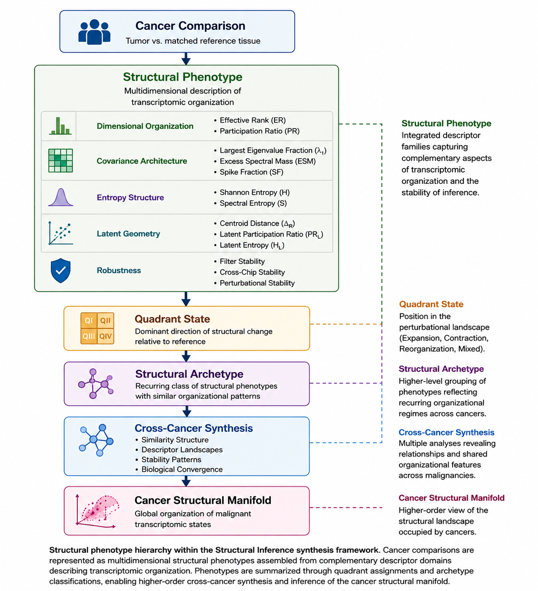

From molecular identity to structural phenotype
The preceding chapter argued that cross-cancer comparison is scientifically meaningful because malignant transformation may impose common organizational constraints across otherwise distinct tissues and lineages. The next question is what, precisely, is being compared.
Structural Inference does not compare cancers primarily as lists of genes, mutations, or pathways. It compares cancers as organized transcriptomic systems. Each cancer comparison is represented as a structural phenotype: a multidimensional description of transcriptomic organization assembled from complementary descriptor families and robustness assessments.
A structural phenotype is not a substitute for histology, molecular subtype, mutation status, or pathway annotation. It is a complementary layer. It asks whether the transcriptomic system has become more dispersed, more concentrated, more entropic, more constrained, more unstable, or more separable in latent space.
Molecular composition and system organization
Two cancers may be molecularly different yet structurally similar. Conversely, two tumors with related lineage or overlapping molecular alterations may occupy different structural states. This distinction reflects the difference between molecular composition and system organization.
Molecular composition asks which components are present or altered. System organization asks how the full transcriptomic ensemble behaves.
Structural descriptors therefore summarize emergent properties of the transcriptome, including dimensionality, covariance architecture, spectral dispersion, entropy, perturbational stability, and latent-space geometry.
Structural phenotype variables
The structural phenotype of a cancer comparison is assembled from multiple descriptor families.
| domain | biological_question | example_variables |
|---|---|---|
| Dimensional organization | How many effective transcriptomic degrees of freedom are occupied? | effective-rank delta; participation-ratio delta |
| Covariance architecture | How is transcriptomic variance organized across eigenspectral modes? | largest-eigenvalue fraction; excess spectral mass; spike fraction |
| Entropy structure | Does the tumor state become more dispersed or more ordered? | Shannon delta; spectral-entropy delta |
| Latent geometry | Are tumor and reference samples geometrically separated? | centroid distance; latent PR delta; latent entropy delta |
| Robustness | Does the interpretation survive feature-space perturbation? | filter-regime stability; quadrant stability; structural confidence |
| Quadrant state | Which combined structural regime describes the tumor-reference transition? | modal quadrant; quadrant confidence; boundary distance |
| Archetype | Does the comparison belong to a recurring structural phenotype? | archetype label; archetype confidence; stability class |
| Biological convergence | Do structural states align with recurrent biological themes? | GO semantic block; semantic cluster; concordant terms |
From Structural Phenotypes to Structural Atlases
The structural phenotype represents the fundamental analytical unit of the synthesis framework.
Each cancer comparison can be viewed as a point in a multidimensional structural phenotype space defined by dimensional organization, covariance architecture, entropy structure, quadrant state, robustness, latent geometry, and biological convergence.
The atlas chapters that follow examine this phenotype space from complementary perspectives.
- The Structural Archetype Atlas asks whether recurring phenotype classes emerge across cancers.
- The Quadrant Occupancy Atlas examines shared organizational regimes.
- The Descriptor Landscape Atlas investigates the distribution of structural variables.
- The Stability Atlas evaluates perturbational robustness.
- The Similarity Matrix examines relationships among structural phenotypes.
- The Biological Convergence Atlas evaluates whether structurally related cancers exhibit recurring biological themes.
Together, these analyses move from individual structural phenotypes toward a broader understanding of transcriptomic organization across malignancies.
Why structural phenotypes matter
Structural phenotypes are useful because they permit comparison across cancers even when the molecular details differ. A carcinoma and a leukemia may not share a dominant mutation or tissue program, yet both may exhibit similar expansion of transcriptomic dimensionality, similar loss of covariance concentration, or similar instability under feature perturbation.
Such similarity would not mean the cancers are biologically identical. It would mean that their transcriptomic systems have adopted comparable organizational states.
Emergent organization
The central premise is that malignant transcriptomes possess emergent properties. These properties are not reducible to single genes. They arise from the collective behavior of thousands of coordinated measurements.
A structural phenotype is therefore a systems-level description of malignancy. It enables the synthesis section to ask whether cancers cluster by tissue identity, by molecular lineage, or by higher-order organization.
From Structural Phenotypes to Structural Synthesis
The following chapters examine structural phenotypes from several perspectives: archetype recurrence, quadrant occupancy, descriptor landscapes, stability, cross-cancer similarity, robustness, and biological convergence.
Together, these analyses ask whether the cancer comparisons form isolated case studies or elements of a broader transcriptomic structural manifold.